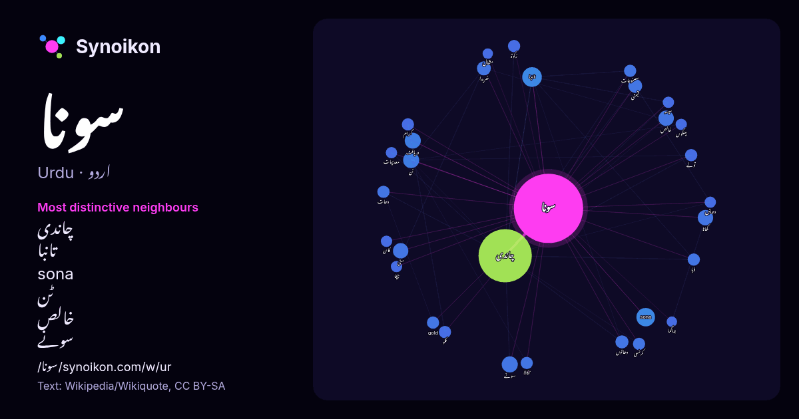

اردو · آج کے الفاظ کی فہرست
سونا
“gold” · ویکیپیڈیا, Wikiquote کے 672 استعمالات میں اس کے آس پاس ملنے والے الفاظ۔

سب سے نمایاں پڑوسی
- چاندی 101×
- تانبا 18×
- sona 17×
- ٹن 11×
- خالص 10×
- سونے 9.4×
- خریدا 9.4×
- کھانا 9.1×
- مٹی 8.9×
- قیمتی 8.7×
- دھاتوں 8.6×
- دریافت 8.4×
- تولے 7.9×
- gold 7.9×
- زکوۃ 7.6×
- لوہا 7.5×
- دھات 7.3×
- سیسہ 6.9×
- نکالا 6.9×
- گرام 6.8×
× = عام ویکیپیڈیا متن کے مقابلے میں کتنے گنا زیادہ۔
سب سے زیادہ آنے والے پڑوسی
- میں 163
- چاندی 132
- سے 116
- کا 82
- اس 77
- نے 58
- کو 45
- کر 37
- یا 37
- بھی 33
- تھا 32
- وہ 31
- کیا 28
- جاتا 27
- نہیں 27
- جو 23
- لیے 23
- گیا 22
- ان 21
- جس 19
سیاق میں
- سونا (Gold) ایک عنصر اور دھات کا نام ہے۔ جو اپنی خصوصیات اور کرہ ارض پر محدود ہونے کی وجہ سے انتہائی مہنگا ہے۔ اس کا ایٹمی نمبر 79 ہے۔ قیمتی دھات ہونے Wikipedia snippets · سونا
- گیکہار سونا (انگریزی: Gekkhar Suna) پاکستان کا ایک پاکستان کی یونین کونسلیں جو اسلام آباد میں واقع ہے۔ گیکہار سونا کی مجموعی آبادی 548 میٹر سطح سمندر Wikipedia snippets · گیکہار سونا
- سونا مکھی (انگریزی: Sonamukhi) بھارت کا ایک آباد مقام جو بانکڑا ضلع میں واقع ہے۔ سونا مکھی کی مجموعی آبادی 27,348 افراد پر مشتمل ہے اور 66 میٹر سطح سمندر Wikipedia snippets · سونا مکھی
- عظیم کے دوران جرمنی نے جو سونا دوسرے ممالک کے بینکوں میں بھیجا وہ نازی سونا (انگریزی: Nazi Gold) کہلاتا ہے۔ اس میں وہ سونا بھی شامل تھا جو جرمنوں نے دوسرے Wikipedia snippets · نازی سونا
- سونا دو پیسے لو (Gold Monetisation Scheme) بھارتی حکومت کی ایک اسکیم کا نام ہے جسے مودی سرکار نے 5 نومبر، 2015ء سے شروع کی ہے۔ اندازہ لگایا جاتا ہے کہ Wikipedia snippets · سونا دو پیسے لو
- کانوں سے نکلا۔ سب سے زیادہ سونا جنوبی افریقا سے نکلا یعنی 52,700 ٹن۔ دوسرے نمبر پر متحدہ امریکہ ہے جس نے آج تک 18,800 ٹن سونا کانوں سے نکالا۔ تیسرے نمبر Wikipedia snippets · سونا کی پیداوار
- عوام پر سونا رکھنے کی پابندی جو 1950 میں لگائ گئی تھی 2003 میں ختم کر دی گئی ہے۔[2] سن 2011 میں چین نے گذشتہ سال سے 20 فیصد زیادہ یعنی 769.8 ٹن سونا خریدا Wikipedia snippets · سونا کے اعداد و شمار
- سونا چاندی ایک کلاسک مزاحیہ ڈراما ٹیلی ویژن سیریل تھا جسے پاکستان ٹیلی ویژن لاہور مرکز نے تیار کیا تھا۔ منو بھائی کے لکھے ہوئے ڈرامے کی کہانی ایک ایسے Wikipedia snippets · سونا چاندی (ڈرامہ)
مزید الفاظ
2026-10-09 کو طے شدہ ترتیبات (±5 الفاظ، درمیانہ کارپس) کے ساتھ پہلے سے شمار کیا گیا۔ انٹرایکٹو نقشہ اسے لائیو ڈیٹا سے تازہ کر سکتا ہے۔
مشینی ترجمہ شدہ انٹرفیس؛ اصلاحات کا خیرمقدم ہے۔